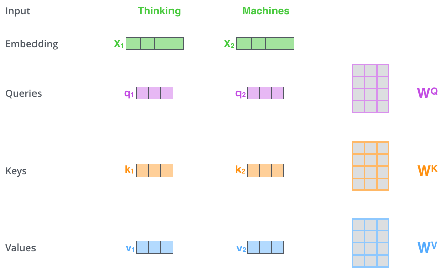

Transformer中的注意力
Transformer中的注意力
本文主要来自：The Illustrated Transformer
1.自注意力
假设我们要翻译下边这句话：“The animal didn’t cross the street because it was too tired”。这里it指的是什么？是street还是animal？人理解起来很容易，但是对算法来讲就不那么容易了。
当模型处理it这个词的时候，自注意力会让**it和animal**关联起来。
当模型编码每个位置上的单词的时候，自注意力的作用就是：看一看输入句子中其他位置的单词，试图寻找一种对当前单词更好的编码方式。
如果你熟悉RNNs模型，回想一下RNN如何处理当前时间步的隐藏状态：将之前的隐藏状态与当前位置的输入结合起来。
在Transformer中，自注意力机制也可以将其他相关单词的“理解”融入到我们当前处理的单词中。
可以去Tensor2Tensor ，自己体验一下上图的可视化。动图如下所示：
2.图解注意力计算
先画图用向量解释一下自注意力是怎么算的，之后再看一下实际实现中是怎么用矩阵算的。
第一步：计算query、key、value向量
对编码器的每个输入向量都计算三个向量，就是对每个输入向量都算一个query、key、value向量。
把输入的词嵌入向量与三个权重矩阵相乘。权重矩阵是模型训练阶段训练出来的。
注意：这三个向量维度是64，比嵌入向量的维度小，嵌入向量、编码器的输入输出维度都是512。这三个向量不是必须比编码器输入输出的维数小，这样做主要是为了让多头注意力的计算更稳定。

将$x_1$和$W^Q$权重矩阵相乘得到$q_1$，就得到与该单词（$x_1$）相关的查询（query）。按照这样的方法，最终我们给输入的每个单词都计算出一个”query”，一个”key” 和一个”value”。
第二步：计算注意力得分
假设我们现在在计算输入中第一个单词Thinking的自注意力。我们需要使用自注意力给输入句子中的每个单词打分，这个分数决定当我们编码某个位置的单词的时候，应该对其他位置上的单词给予多少关注度。
这个得分是query和key的点乘积得出来的。
举个栗子，我们要算第一个位置的注意力得分的时候就要将第一个单词的query和其他的key依次相乘，在这里就是 $q_1 \cdot k_1$，$q_1 \cdot k_2$
第三步：将计算获得注意力分数除以 $\sqrt{d}=8$
为什么选8？是因为key向量的维度是64，取其平方根，这样让梯度计算的时候更稳定。
第四步：归一化softmax
除8之后将结果扔进softmax计算，使结果归一化，softmax之后注意力分数相加等于1，并且都是正数。
这个softmax之后的注意力分数表示 在计算当前位置的时候，其他单词受到的关注度的大小。显然在当前位置的单词肯定有一个高分，但是有时候也会注意到与当前单词相关的其他词汇。
第五步：计算注意力分数
将每个value向量乘以注意力分数。这是为了留下我们想要关注的单词的value，并把其他不相关的单词丢掉。
在第一个单词位置得到新的$v_1$
第六步：计算注意力结果
将上一步的结果相加，输出本位置的注意力结果。第一个单词的注意力结果就是 $z_1$。
这就是自注意力的计算。计算得到的向量直接传递给前馈神经网络。但是为了处理的更迅速，实际是用矩阵进行计算的。接下来我们看一下怎么用矩阵计算。
3.矩阵计算self-attention
计算Query, Key, Value矩阵。直接把输入的向量打包成一个矩阵$X$，再把它乘以训练好的$\color{purple}{W^Q}$, $\color{yellow}{W^K}$,$ \color{cyan}{W^V} $.
X矩阵每一行都代表输入句子中的一个单词，整个矩阵代表输入的句子。
论文中词嵌入矩阵维度维512，q、k、v矩阵的长度为64，这里分别使用4个格子和3个格子表示。
因为我们现在用矩阵处理，所以可以直接将之前的第二步到第六步压缩到一个公式中一步到位获得最终的注意力结果 $\color{pink}{Z}$
4.多头自注意力
论文进一步改进了自注意力层，增加了一个机制，也就是多头注意力机制。这样做有两个好处：
- 扩展了模型专注于不同位置的能力
- 给了注意力层多个“表示子空间”
4.1 扩展了模型专注于不同位置的能力
在上面例子里只计算一个自注意力的的例子中，编码“Thinking”的时候，虽然最后 $Z_1$或多或少包含了其他位置单词的信息，但是它实际编码中还是被“Thinking”单词本身所支配。
如果我们翻译一个句子，比如“The animal didn’t cross the street because it was too tired”，我们会想知道“it”指的是哪个词，这时模型的“多头”注意力机制会起到作用。
4.2 给了注意力层多个“表示子空间”
就是在多头注意力中同时用多个不同的$\color{purple}{W^Q}$, $\color{yellow}{W^K}$,$ \color{cyan}{W^V} $权重矩阵(Transformer使用8个头部，因此我们最终会得到8个计算结果)，每个权重都是随机初始化的。经过训练每个$\color{purple}{W^Q}$, $\color{yellow}{W^K}$,$ \color{cyan}{W^V} $都能将输入的矩阵投影到不同的表示子空间。
Transformer中的一个多头注意力（有8个head）的计算，就相当于用自注意力做8次不同的计算，并得到8个不同的结果$\color{pink}{Z}$
但是这会存在一点问题，多头注意力出来的结果会进入一个前馈神经网络，这个前馈神经网络可不能一下接收8个注意力矩阵，它的输入需要是单个矩阵（矩阵中每个行向量对应一个单词），所以我们需要一种方法把这8个压缩成一个矩阵。
以上就是多头自注意力的全部内容。让我们把多头注意力上述内容 放到一张图里看一下子：